Sách tặng chủ quán đã ký hợp đồng
Thực đơn QR
Cẩm nang chủ quán
Cách dùng · Vận hành quán · Lời nói với khách · Mẹo quảng bá
Xem từng hình và làm theo từ từ nhé.
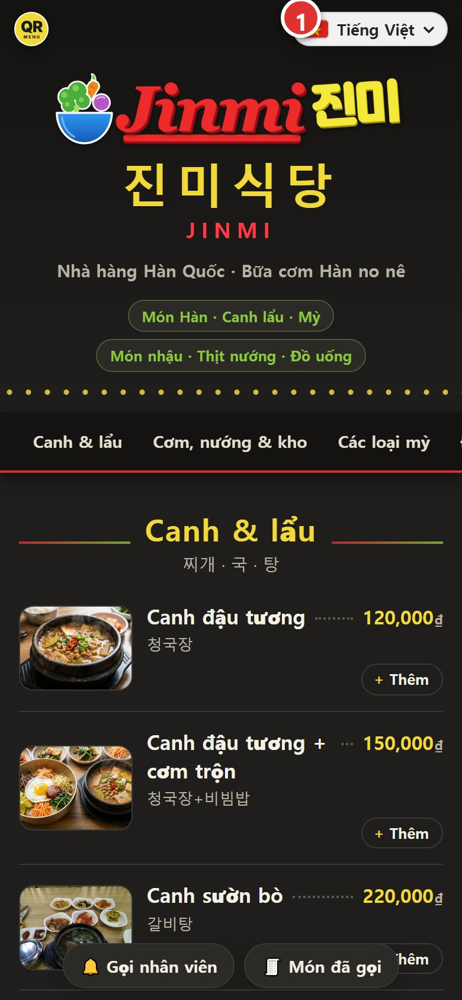
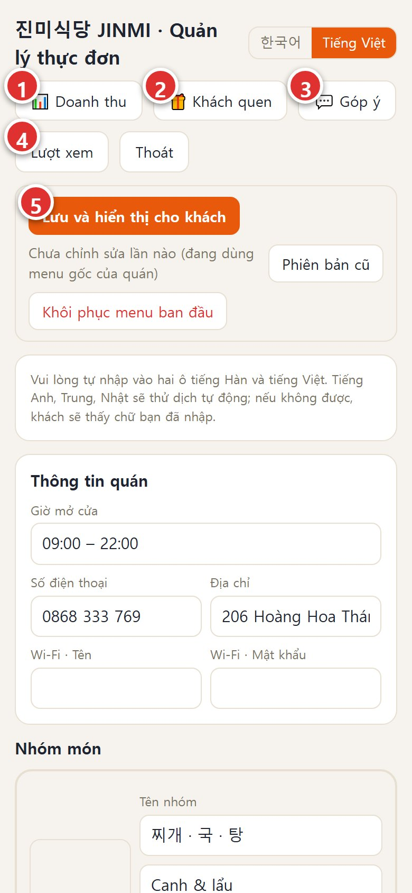
QR MENU · qrmenuasia.comBản tiếng Việt · Tháng 11/2026
Cách đọc cuốn sách này
🔴
Số trong vòng tròn đỏ
Số đỏ trong hình trùng với số ở phần giải thích bên cạnh. Cứ xem theo thứ tự số.
💡
Khung xanh lá = Mẹo hay
Những mẹo nhỏ giúp việc buôn bán thuận lợi hơn.
⚠️
Khung đỏ = Cẩn thận
Những lỗi hay gặp. Anh/chị nhớ đọc kỹ.
🗣
Bong bóng lời nói = Nói với khách
Cứ đọc đúng như vậy là được. Dùng để hướng dẫn nhân viên cũng tốt.
💡 Nên đọc thế nàoAnh/chị không cần đọc từ đầu đến cuối. Hôm nay cần phần nào thì mở phần đó, vừa xem hình vừa bấm thử trên điện thoại. Khi dạy nhân viên, hãy cùng xem chương 2 và chương 8.
Mục lục
- 1
Bắt đầuThực đơn QR là gì, quán mình được lợi gì
- 2
Làm quen màn hình của kháchNgôn ngữ · hình ảnh · giỏ món · đơn gọi món · gọi nhân viên · món đã gọi
- 3
Màn hình chủ quán: sửa thực đơnĐăng nhập · giá · hết món · hình ảnh · thông tin quán · ưu đãi hôm nay
- 4
Màn hình bếp và máy in hóa đơnNhận đơn · sơ đồ bàn · kết nối máy in
- 5
Xem số liệu: doanh thu và lượt xemDoanh thu theo ngày · theo món, báo cáo lượt xem
- 6
Giữ chân khách quenTích tem · hộp góp ý · đánh giá Google
- 7
Mẹo vận hành quánChỗ đặt thẻ QR · huấn luyện nhân viên · bảng kiểm tra hằng ngày
- 8
Lời nói với kháchCâu mẫu theo từng tình huống
- 9
Mẹo quảng bá quánHình mạng xã hội · Google Maps · Zalo · Facebook
- 10
Câu hỏi thường gặp · Khi gặp sự cốKhông có tiếng · máy in · tem · liên hệ
01
Bắt đầu
Thực đơn QR là thực đơn của quán mình nằm ngay trong điện thoại của khách.
Không khó đâu. Chỉ cần đọc chương này là hôm nay đã dùng được.
Trong chương này
- Thực đơn QR dùng thế nào?
- Quán mình được lợi gì?
- Quán mình đang bật những chức năng nào?
- 5 việc nên làm ngay ngày đầu

Thẻ QR đặt trên bàn (ví dụ: quán Jinmi – 진미식당)
1-1Thực đơn QR dùng thế này
Khách không cần cài ứng dụng. Chỉ cần có camera điện thoại.
🪑Khách ngồi vào bàn
›
📷Dùng camera điện thoại quét thẻ QR trên bàn
›
📱Bấm vào đường link hiện trên màn hình, thực đơn sẽ mở ra
›
🍲Xem hình rồi chọn món
Màn hình đầu tiên khi khách quét QR
Địa chỉ thực đơn của quán
Mỗi quán có một địa chỉ riêng.
https://tenquan.qrmenuasia.com
Ví dụ: quán Jinmi → jinmi.qrmenuasia.com
💡 Mẹo hayHãy dán địa chỉ này vào phần giới thiệu Zalo, Facebook của quán. Khách chưa đến quán cũng xem được thực đơn.
📌 Anh/chị nên biếtThẻ QR đặt ở mỗi bàn có số bàn. Vì vậy khách không phải tự nhập số bàn, nó tự vào đơn gọi món.
⚠️ Cẩn thậnNếu chuyển thẻ QR sang bàn khác thì số bàn sẽ bị sai. Luôn để thẻ đúng chỗ của nó.
1-28 điều tốt cho quán mình
🌏
Khách nước ngoài tự gọi món
Hiển thị 5 ngôn ngữ: Hàn, Anh, Trung, Nhật, Việt. Tự đổi theo ngôn ngữ điện thoại của khách.
📸
Xem hình rồi chọn ngay
Bấm vào hình món để xem to. Khách đỡ phải hỏi “món này là món gì?”.
✏️
Sửa giá ngay trên điện thoại
Đổi giá không cần in lại thực đơn. Sửa rồi bấm lưu, trong vòng 1 phút là đổi.
🚫
Báo hết món
Hết nguyên liệu thì chỉ cần tích một cái. Màn hình khách hiện “Hết món”, không còn khách gọi nhầm.
🧾
Đơn gọi món ít nhầm hơn
Món khách chọn hiện chữ to bằng ngôn ngữ của nhân viên. Đỡ nghe nhầm.
🔔
Gọi nhân viên
Gọi nước, thêm đồ ăn kèm, tính tiền bằng nút bấm. Khách không phải giơ tay chờ.
🎁
Tích tem khách quen
Không cần phiếu giấy, tem tích ngay trong điện thoại. Khách sẽ quay lại.
📊
Số liệu doanh thu, lượt xem
Xem bằng con số: món nào bán chạy, có bao nhiêu người đã xem thực đơn.
💡 Tóm lạiThực đơn QR = thực đơn giấy (cho khách xem) + một phần việc của nhân viên (nhận món, gọi nhân viên) + cuốn sổ của chủ quán (doanh thu, khách quen).
1-3Chức năng quán mình đang bật
Chức năng chia làm ba loại. Xem nhãn màu trong bảng.
Bật sẵn Báo chúng tôi sẽ bật Chủ quán tự bật
| Chức năng | Cách bật | Xem ở chương nào |
|---|
| Thực đơn · 5 ngôn ngữ · hình ảnh | Bật sẵn | Chương 2 |
| Giỏ món · Đưa nhân viên xem | Bật sẵn | Chương 2 |
| Sửa món · giá · hết món · hình ảnh | Bật sẵn | Chương 3 |
| Gửi đơn vào bếp · Gọi nhân viên · Món đã gọi | Báo chúng tôi sẽ bật | Chương 2 · 4 |
| Màn hình bếp · máy in hóa đơn | Báo chúng tôi sẽ bật | Chương 4 |
| Xem doanh thu | Tích lũy từ ngày bật gọi món vào bếp | Chương 5 |
| Lượt xem | Bật sẵn | Chương 5 |
| Tích tem · Dải ưu đãi hôm nay | Chủ quán tự bật | Chương 3 · 6 |
| Hộp góp ý (khách chấm sao) | Chủ quán tự bật | Chương 6 |
✅ 5 việc nên làm ngay ngày đầu
- Đặt thẻ QR đúng số bàn ở từng bàn.
- Dùng điện thoại của chủ quán quét thử QR để mở thực đơn.
- Thêm một món vào giỏ rồi bấm thử đến 'Đưa nhân viên xem'. (Chương 2)
- Đăng nhập màn hình chủ quán và chỉ xem giá một món. (Chương 3)
- Tập hợp nhân viên, cùng xem chương 2 của cuốn sách này.
02
Làm quen màn hình của khách
Biết khách thấy gì thì mới giải thích dễ.
Anh/chị hãy cầm điện thoại mình và bấm theo.
Trong chương này
- Màn hình đầu tiên và đổi ngôn ngữ
- Tìm món và xem hình to
- Thêm món và đơn gọi món
- Đưa nhân viên xem · Gửi đơn vào bếp
- Gọi nhân viên · Món bàn mình đã gọi
2-1Màn hình đầu tiên và đổi ngôn ngữ
Khi quét QR, trên cùng là bảng hiệu (hoặc logo) và tên quán, bên dưới là thực đơn.
- Nút ngôn ngữ — ngôn ngữ đang hiện. Bấm vào để chọn ngôn ngữ khác.
📌 Tự động phù hợpĐiện thoại khách Việt mở bằng tiếng Việt, điện thoại khách Hàn mở bằng tiếng Hàn. Khách không phải làm gì thêm.

Sau khi bấm nút ngôn ngữ
Hiện ra 5 ngôn ngữ kèm lá cờ.
🇰🇷 한국어 · 🇬🇧 English · 🇨🇳 中文 · 🇯🇵 日本語 · 🇻🇳 Tiếng Việt
"Anh/chị bấm nút ở góc trên bên phải là đổi được sang ngôn ngữ anh/chị muốn ạ."
💡 Mẹo hayDưới tên món có tên tiếng Việt nhỏ (tùy quán). Nhân viên không biết tiếng Hàn vẫn nhìn màn hình khách là biết món gì.
2-2Tìm món và xem hình to
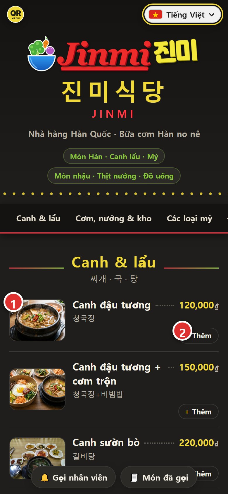
Danh sách món
Phía trên thực đơn có dải tên nhóm món (lẩu, canh, cơm…). Bấm vào là chạy thẳng đến nhóm đó.
- Hình món — bấm vào để xem to.
- + Thêm — bấm là món vào giỏ. Bấm thêm lần nữa là thành 2 phần.
💡 Mẹo hayMón có hình bán chạy hơn. Món chưa có hình thì xem chương 3 để tải ảnh lên.
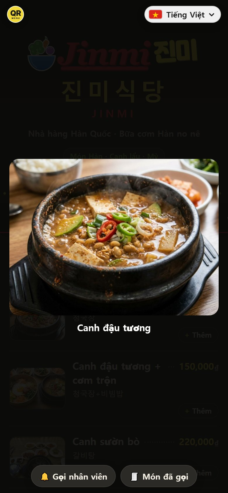
Sau khi bấm vào hình
Hình hiện to đầy màn hình, tên món ở bên dưới.
Bấm vào chỗ nào cũng được là quay về danh sách món.
"Anh/chị bấm vào hình là xem được hình to ạ."
2-3Thêm món và đơn gọi món
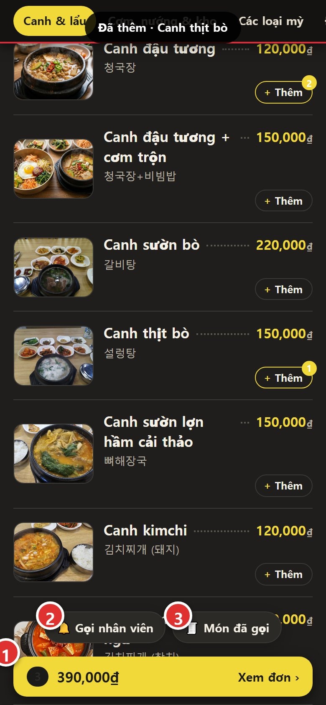
Sau khi thêm món
- Thanh giỏ món — hiện số món đã thêm và tổng tiền. Bấm 'Xem đơn' để mở đơn gọi món.
- Gọi nhân viên — nút gọi nước, đồ ăn kèm… (xem 2-5)
- Món đã gọi — xem những món bàn mình đã gọi. (xem 2-5)
📌 Anh/chị nên biếtNút số 2 và số 3 chỉ hiện ở quán đã bật 'Gửi đơn vào bếp'.

Đơn gọi món
- Số lượng — đổi số phần bằng − / +.
- Ghi chú — viết như “Ít cay”, “Thêm 2 bát”.
- Gửi đơn vào bếp — đơn đi thẳng đến màn hình bếp. (Chỉ quán đã bật)
- Đưa nhân viên xem — khách đưa màn hình cho nhân viên xem.
📌 Số bànNếu vào bằng thẻ QR thì số bàn đã được điền sẵn.
2-4Đưa nhân viên xem · Gửi đơn vào bếp

Màn hình sau khi bấm 'Đưa nhân viên xem'
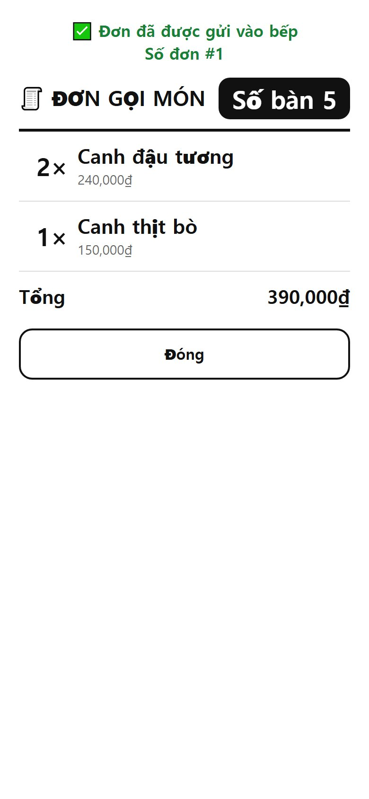
Sau khi bấm 'Gửi đơn vào bếp'
👀 Đưa nhân viên xem
Khách đưa điện thoại cho nhân viên xem. Tên món hiện chữ to bằng ngôn ngữ nhân viên (tiếng Việt), ngôn ngữ của khách hiện nhỏ hơn. Có cả số bàn và tổng tiền. Nhân viên nhìn vào đó để ghi món.
📨 Gửi đơn vào bếp
Đơn đi thẳng vào màn hình bếp. Màn hình khách hiện “Đơn đã được gửi vào bếp” kèm số đơn. Nhân viên không cần ra bàn. (Chương 4)
"Chọn món xong, anh/chị bấm 'Xem đơn' rồi bấm 'Gửi đơn vào bếp'. Bếp nhận được ngay ạ."
⚠️ Cẩn thậnNếu chỉ bấm 'Đưa nhân viên xem' thì đơn không tự vào bếp. Nhân viên phải ghi lại hoặc báo cho bếp.
2-5Gọi nhân viên · Món bàn mình đã gọi
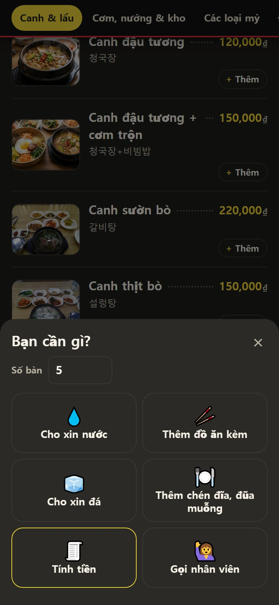
Sau khi bấm 'Gọi nhân viên'
Bấm 1 trong 6 nút thì màn hình bếp hiện thông báo.
💧 Cho xin nước · 🥢 Thêm đồ ăn kèm · 🧊 Cho xin đá · 🍽 Thêm chén đĩa, đũa muỗng · 🧾 Tính tiền · 🙋 Gọi nhân viên
📌 Anh/chị nên biếtCùng một nút phải chờ 30 giây mới bấm lại được. Để tránh khách bấm nghịch nhiều lần.
💡 Mẹo hayKhi có thông báo, hãy bấm [Xong] trên màn hình bếp. Cho đến khi bấm, cứ 30 giây lại kêu “ting” một lần.
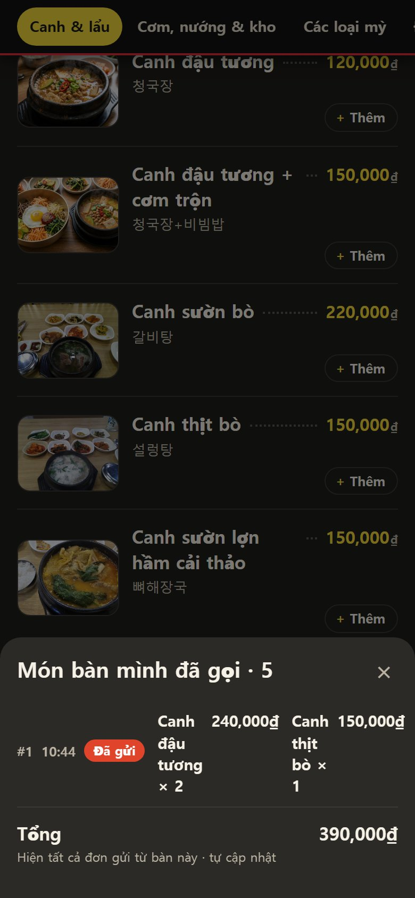
Sau khi bấm 'Món đã gọi'
Hiện chung ở một chỗ tất cả món do cả nhóm cùng bàn gọi bằng điện thoại của từng người.
Mỗi món có trạng thái hiện tại:
Đã gửi → Đang làm → Đã ra món
"Anh/chị bấm 'Món đã gọi' là xem được món đang làm tới đâu ạ."
03
Màn hình chủ quán:
sửa thực đơn
Giá, hết món, hình ảnh do chủ quán tự sửa bằng điện thoại.
Bấm lưu là màn hình khách đổi trong vòng 1 phút.
Trong chương này
- Vào màn hình chủ quán
- Xem qua màn hình đầu tiên
- Sửa giá · báo hết món · đổi hình
- Mô tả · nhãn BEST · thông tin quán
- Quay lại khi sửa nhầm
- Dải ưu đãi hôm nay
3-1Vào màn hình chủ quán
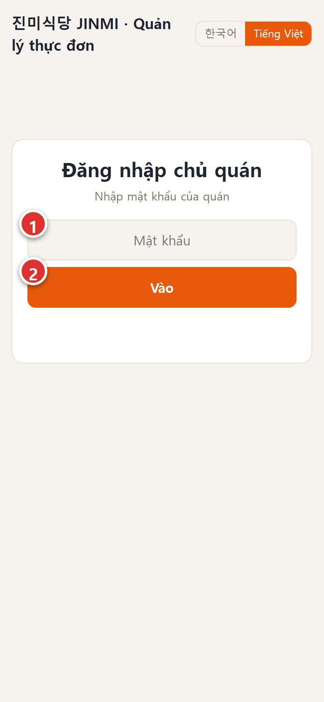
Màn hình đăng nhập
Bấm vào địa chỉ màn hình chủ quán mà chúng tôi đã gửi.
qrmenuasia.com/owner/?shop=maquan
- Mật khẩu — nhập mật khẩu quán mà chúng tôi đã báo riêng.
- Vào — bấm để mở màn hình chủ quán.
💡 Mẹo hay: thêm vào màn hình chínhMở địa chỉ, vào menu trình duyệt (⋮), bấm 'Thêm vào màn hình chính' là có biểu tượng như ứng dụng. Lần sau vào một chạm.
⚠️ Cẩn thậnChỉ cho người đáng tin biết mật khẩu. Nhập sai 8 lần sẽ bị khóa 1 giờ. Đóng cửa sổ hoặc để lâu (12 giờ) thì phải nhập lại.
3-2Xem qua màn hình đầu tiên
Màn hình đầu tiên sau khi đăng nhập
Nút 한국어 / Tiếng Việt ở góc trên bên phải giúp đổi chữ trên màn hình. Dùng khi giao việc cho nhân viên người Việt.
- 📊 Doanh thu — doanh thu theo ngày, theo món (chương 5)
- 🎁 Khách quen — tích tem, dải ưu đãi hôm nay (3-6, chương 6)
- 💬 Góp ý — số sao và lời nhắn của khách (chương 6)
- Lượt xem — số người đã xem thực đơn (chương 5)
- Lưu và hiển thị cho khách — sau khi sửa, nhất định phải bấm nút này.
⚠️ Lỗi hay gặp nhấtSửa xong mà quên bấm nút số 5 'Lưu'. Chưa lưu thì màn hình khách vẫn như cũ. Nếu phía trên hiện “Có thay đổi chưa lưu” nghĩa là vẫn chưa lưu.
3-3Sửa giá · hết món · hình ảnh
- Ảnh — ảnh khách đang thấy.
- Tên món — ô trên là tiếng Hàn, ô dưới là tiếng Việt.
- Dòng có các nút Hết món · Tải ảnh lên · Xóa ảnh.
Bên dưới là ô Giá (₫ hoặc ₩).
💡 Món theo thời giáĐể trống ô giá thì màn hình khách hiện “Hỏi giá”.
💰 Sửa giá
- Bấm vào ô giá của món cần sửa.
- Chỉ nhập số. VD: 120000
- Bấm 'Lưu và hiển thị cho khách' ở trên cùng.
- Mở thực đơn khách trên điện thoại mình để kiểm tra.
🚫 Báo hết món
- Tích vào ô 'Hết món' của món đó.
- Bấm 'Lưu và hiển thị cho khách'.
- Màn hình khách hiện món mờ đi kèm chữ 'Hết món' màu đỏ.
- Có nguyên liệu lại thì bỏ tích rồi lưu lại.
3-4Đổi hình · mô tả · nhãn BEST
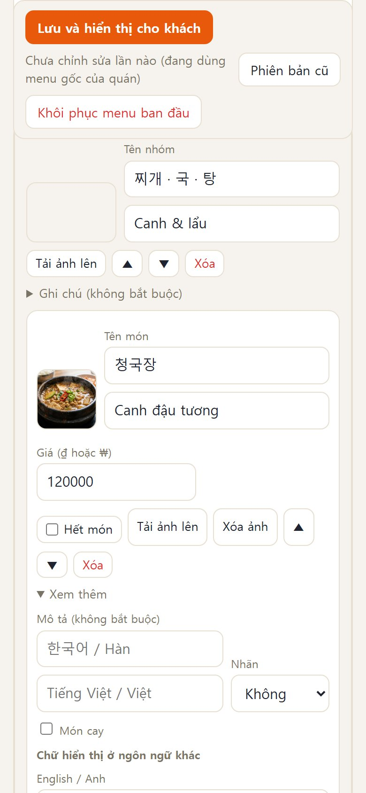
Sau khi bấm 'Xem thêm'
📷 Đổi hình
- Bấm 'Tải ảnh lên' của món đó.
- Chọn ảnh món ăn trong thư viện ảnh điện thoại.
- Bấm 'Lưu và hiển thị cho khách'.
📝 Việc làm được trong 'Xem thêm'
· Mô tả — mô tả ngắn như “2–3 người ăn”, “rất cay”
· Nhãn — BEST · Món mới · Đề xuất
· Món cay — tích vào thì hiện nhãn "🌶"
· Chữ hiển thị ở ngôn ngữ khác — tiếng Anh, Trung, Nhật
📌 Dịch tự độngChỉ cần nhập 2 ô tiếng Hàn và tiếng Việt. Khi lưu, hệ thống tự dịch sang tiếng Anh, Trung, Nhật. Nếu không dịch được thì hiện đúng chữ anh/chị đã nhập.
💡 Cách chụp hình món ăn dễ bán① Chụp ở chỗ sáng, như gần cửa sổ ② Chụp ngang ③ Chụp xéo từ trên xuống (45 độ) ④ Món ăn chiếm đầy khung hình ⑤ Chụp ngay khi còn bốc khói.
3-5Thông tin quán · khi sửa nhầm
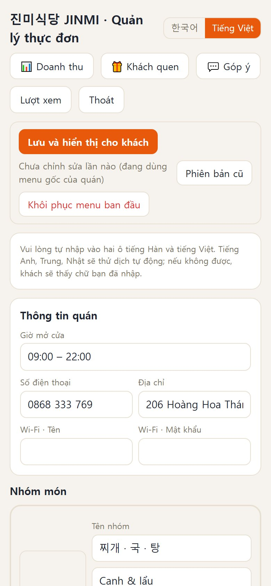
Phần thông tin quán
Sửa giờ mở cửa · số điện thoại · địa chỉ · Wi-Fi (tên · mật khẩu) ở đây. Thông tin hiện ở cuối thực đơn của khách.
💡 Mẹo hayGhi sẵn Wi-Fi thì khách tự kết nối, không phải hỏi nhân viên. Giờ mở cửa ngày nghỉ, ngày lễ cũng nên đổi trước.
📌 Thêm món · đổi thứ tựBấm '+ Thêm món' dưới nhóm món để thêm món mới, '+ Thêm nhóm' để thêm nhóm mới. Dùng ▲ ▼ để đổi thứ tự, Xóa để xóa.
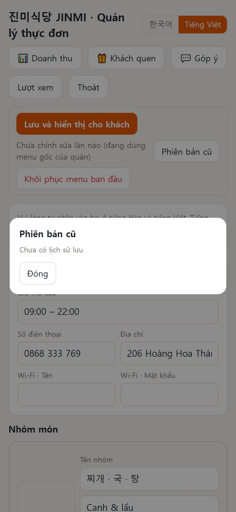
Sau khi bấm 'Phiên bản cũ'
↩️ 2 cách quay lại
Phiên bản cũ — mỗi lần lưu đều được ghi lại. Chọn ngày trong danh sách rồi bấm 'Dùng phiên bản này' là quay về lúc đó.
Khôi phục menu ban đầu — quay về thực đơn mà chúng tôi làm lúc đầu. Lịch sử phiên bản cũ vẫn còn.
💡 Yên tâmSửa nhầm lúc nào cũng quay lại được. Đừng sợ, cứ bấm thử.
3-6Dải ưu đãi hôm nay
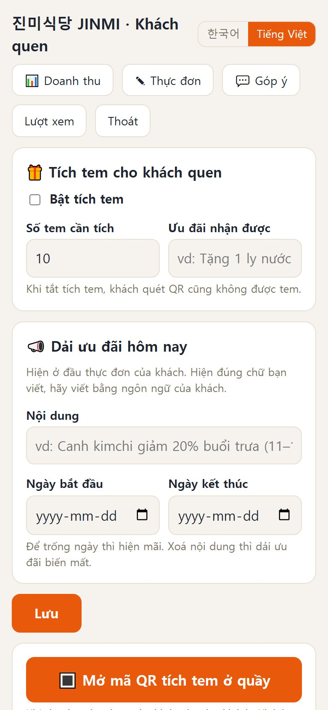
Màn hình sau khi bấm 🎁 Khách quen
Tin ưu đãi hiện thành dải 📣 ngay trên danh sách món trong thực đơn của khách. Hợp để báo giảm giá buổi trưa, khuyến mãi món mới.
- Ở màn hình chủ quán, bấm 🎁 Khách quen.
- Viết vào ô 'Nội dung' của 'Dải ưu đãi hôm nay'.
VD: Canh kimchi giảm 20% buổi trưa (11–14h)
- Chọn ngày bắt đầu và ngày kết thúc. Để trống thì hiện mãi.
- Bấm 'Lưu' ở dưới.
📌 Anh/chị nên biếtNội dung dải ưu đãi hiện đúng chữ đã viết (không dịch tự động). Nên viết cả tiếng Việt và tiếng Hàn. VD: Giảm 20% buổi trưa · 점심 20% 할인
⚠️ Cẩn thậnMuốn tắt dải ưu đãi thì xóa nội dung rồi lưu. Phần tích tem (phía trên cùng màn hình) sẽ nói kỹ ở chương 6.
04
Màn hình bếp và
máy in hóa đơn
Khi khách bấm 'Gửi đơn vào bếp', đơn hiện trên máy tính bảng (hoặc điện thoại) ở bếp.
Không cần ghi ra giấy nữa.
Trong chương này
- Mở màn hình bếp
- Nhận đơn mới · Đang làm · Xong
- Khách gọi và cảnh báo khách chưa hài lòng
- Xem các bàn một lượt trên sơ đồ bàn
- Cài đặt máy (âm thanh · máy in)
- Kết nối máy in hóa đơn
📌 Chức năng này: báo chúng tôi sẽ bậtKhi bật gọi món vào bếp, chúng tôi sẽ báo địa chỉ màn hình bếp và mã PIN 6 số (mật khẩu).
4-1Mở màn hình bếp
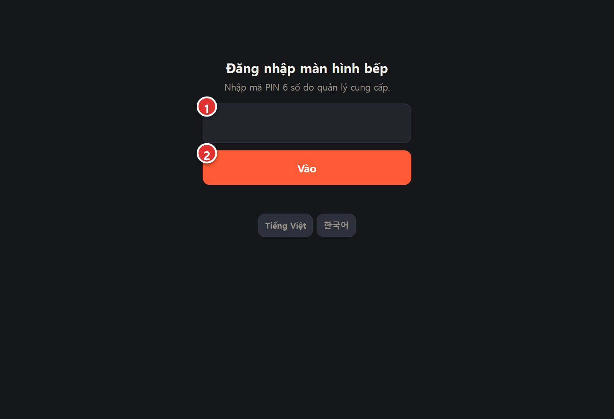
Màn hình đầu tiên trên máy tính bảng ở bếp
- Nhập mã PIN 6 số.
- Bấm Vào.
Sau đó nhớ bấm nút '▶ Bắt đầu'. Có bấm thì âm báo đơn mới mới bật và màn hình không tự tắt.
qrmenuasia.com/kitchen/?shop=maquan
💡 Mẹo hayVào một lần thì 60 ngày không phải nhập lại PIN. Hãy cắm sạc máy tính bảng và đặt ở chỗ bếp dễ nhìn.
⚠️ Cẩn thậnChỉ cho nhân viên bếp biết PIN. Nhân viên nghỉ việc thì báo chúng tôi. Chúng tôi sẽ tạo PIN mới và đăng xuất tất cả máy khác.
4-2Nhận đơn mới
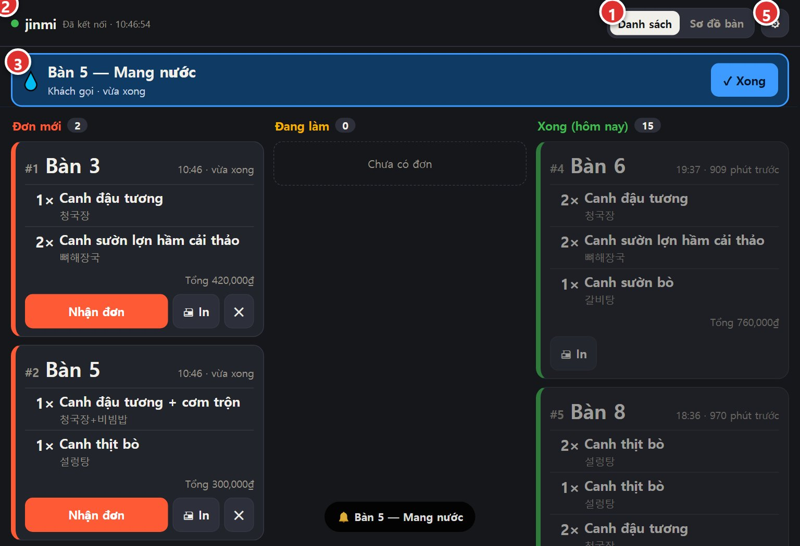
Khi có đơn mới vào
- Danh sách / Sơ đồ bàn — đổi cách xem. (4-5)
- Dải khách gọi — khách gọi nước, tính tiền… (4-4)
- Ô đơn mới — đơn mới vào có viền đỏ.
- Nút đỏ 'Nhận đơn' — nghĩa là đã thấy đơn.
- ⚙ Cài đặt — đổi âm thanh, máy in. (4-6)
📌 Âm thanhCó đơn mới thì kêu “ding-dong” và màn hình nhấp nháy. Cứ 20 giây lại kêu cho đến khi bấm 'Nhận đơn'.
💡 Thẻ đơnSố bàn · mấy phút trước · món (tiếng Việt chữ to, tiếng Hàn chữ nhỏ) · ghi chú · tổng tiền · [Nhận đơn] [🖨 In] [✕ Hủy]
4-3Đang làm → Xong
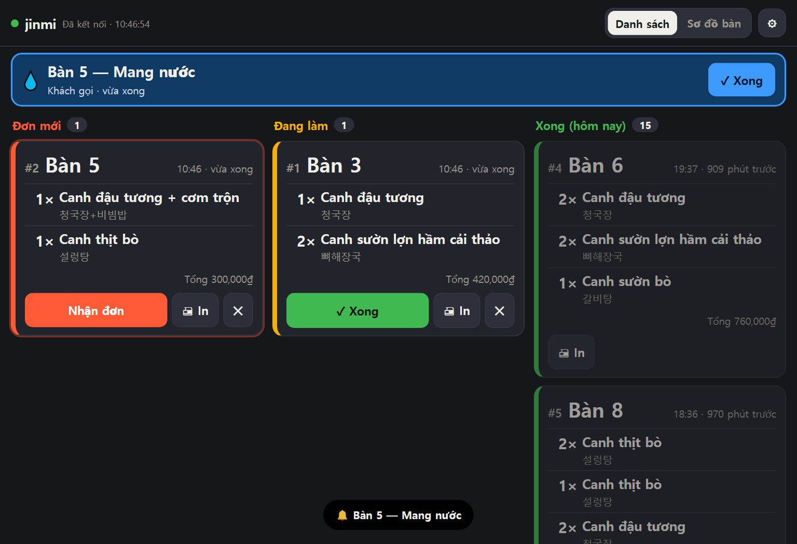
Bấm 'Nhận đơn' thì đơn chuyển sang cột giữa 'Đang làm'
🔴Đơn mới
Bấm [Nhận đơn]
›
🟡Đang làm
Làm xong thì bấm [Xong]
›
🟢Xong (hôm nay)
Các đơn đã xong hôm nay
📌 Điện thoại khách cũng đổi theoBấm ở bếp thì mục 'Món đã gọi' của khách tự đổi: Đã gửi → Đang làm → Đã ra món.
⚠️ Khi hủy đơnBấm [Hủy] sẽ hỏi lại một lần. Đơn đã hủy bị trừ khỏi doanh thu và cũng biến mất khỏi mục món đã gọi của khách. Bấm nhầm thì bấm [Hoàn tác].
4-4Khách gọi · cảnh báo khách chưa hài lòng
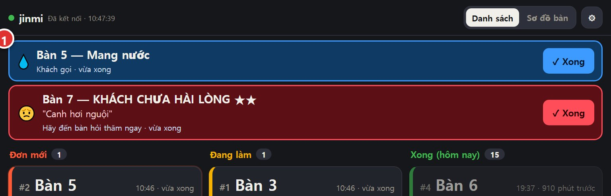
Dải hiện trên cùng màn hình bếp
| Màu dải | Ý nghĩa | Việc cần làm |
|---|
| 🔵 Xanh dương | Mang nước · Thêm đồ ăn kèm · Mang đá · Thêm chén đĩa, đũa muỗng · Gọi nhân viên | Mang ra rồi bấm [Xong] |
| 🟠 Cam | TÍNH TIỀN | Mang hóa đơn đến rồi bấm [Xong] |
| 🔴 Đỏ | KHÁCH CHƯA HÀI LÒNG — khách chấm 1–3 sao trong hộp góp ý (chương 6) | Ra bàn ngay, hỏi khách chưa hài lòng điều gì rồi bấm [Xong] |
📌 Âm thanhTiếng gọi là “ting ting”, ngắn hơn chuông báo đơn. Cứ 30 giây lại kêu cho đến khi bấm [Xong]. Sau 1 giờ thì tự biến mất.
💡 Cảnh báo chưa hài lòng là cơ hộiXin lỗi và xử lý ngay trước khi khách ra về, thì thay vì đánh giá xấu, khách sẽ quay lại.
4-5Sơ đồ bàn: nhìn các bàn một lượt
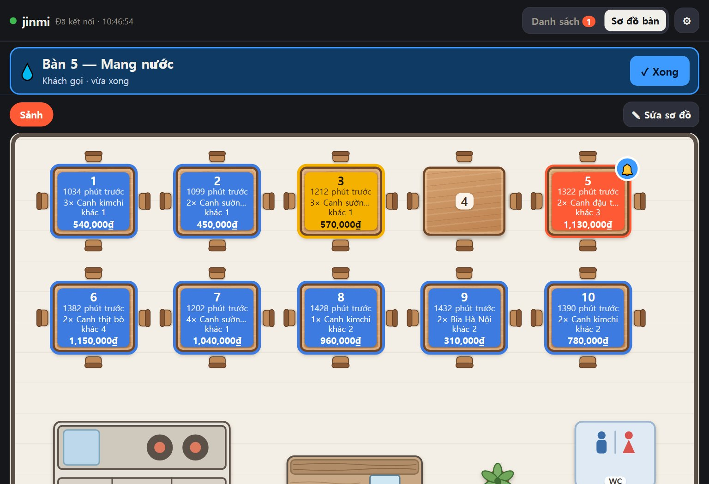
Sau khi bấm 'Sơ đồ bàn' ở phía trên
🎨 Màu viền của bàn
⚪ Xám — Bàn trống
🔴 Đỏ (nhấp nháy) — Đơn mới
🟡 Vàng — Đang làm
🔵 Xanh dương — Đã ra món (đang ăn)
Bấm vào bàn thì mở đơn của bàn đó. Khi khách ra về, bấm [Dọn bàn] để bàn trở lại trống.
✎ Sửa cho giống quán mình
- Bấm ✎ Sửa sơ đồ.
- Kéo bàn bằng ngón tay. + Bàn, + Đồ vật… (Bếp · Quầy · WC · Cầu thang · Cây…), + Khu (Tầng 1 · Tầng 2 · Sân ngoài)
- Bấm Lưu.
⚠️ Cẩn thậnSố bàn trên sơ đồ phải giống số bàn trên thẻ QR thì đơn mới hiện đúng chỗ.
4-6Cài đặt máy: âm thanh · máy in
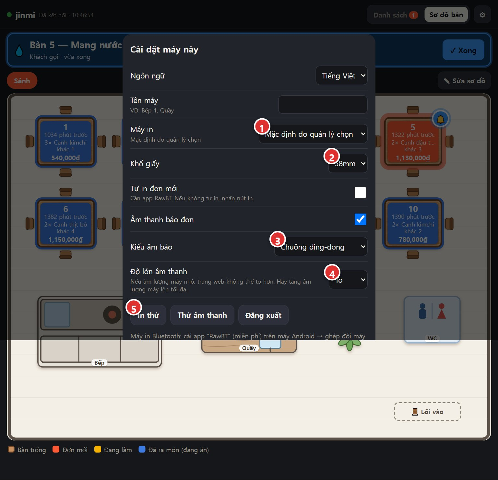
⚙ Cài đặt máy này
Cài đặt được lưu riêng cho từng máy. Máy tính bảng ở bếp và điện thoại ở quầy có thể cài khác nhau.
- Máy in — Máy in Bluetooth (app RawBT) / In qua trình duyệt / Không in
- Khổ giấy — 58mm hoặc 80mm (độ rộng giấy của máy in)
- Kiểu âm báo — Chuông ding-dong · Chuông 3 nốt · Reng reng (điện thoại) · Bíp bíp (bếp ồn) · Đàn gõ
- Độ lớn âm thanh — Vừa / To / Rất to
- In thử · Thử âm thanh — kiểm tra xem có hoạt động tốt không
⚠️ Khi tiếng nhỏDù chọn 'Rất to' trên màn hình, nếu âm lượng của máy nhỏ thì cũng vô ích. Hãy dùng nút âm lượng bên cạnh máy tính bảng để tăng hết cỡ. Tắt luôn chế độ im lặng (rung).
💡 Tên máyĐặt tên như 'Bếp 1', 'Quầy' thì đỡ nhầm.
4-7Kết nối máy in hóa đơn
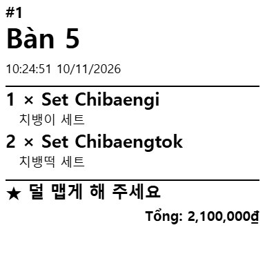
Hóa đơn đơn hàng mẫu
Khi có đơn, có thể in hóa đơn cho bếp như thế này. Số bàn chữ to, món ăn ghi bằng tiếng Việt và tiếng Hàn.
📌 Không có máy in cũng không saoChỉ cần nhìn màn hình bếp rồi nấu cũng được. Lúc đó hãy chọn 'Không in' trong cài đặt.
📱 Máy tính bảng, điện thoại Android
- Cài ứng dụng miễn phí RawBT từ CH Play.
- Máy in Bluetooth: ghép đôi máy in trong Bluetooth của điện thoại (mật khẩu thường là 0000 hoặc 1234).
Máy in dùng dây mạng: trong RawBT chọn 'Network' và nhập IP máy in.
- Chọn máy in trong RawBT.
- Màn hình bếp ⚙ → Máy in 'Máy in Bluetooth (app RawBT)' → In thử.
💻 Máy tính · iPad
- Kết nối máy in vào máy tính trước (cài phần mềm của hãng máy in).
- Màn hình bếp ⚙ → Máy in 'In qua trình duyệt'.
- Bấm [🖨 In] rồi chọn máy in đó trong cửa sổ in.
💡 Nếu thấy khóHãy chụp ảnh tên máy in (nhãn dán mặt sau) gửi cho chúng tôi. Chúng tôi sẽ hướng dẫn cách kết nối phù hợp.
05
Xem số liệu:
doanh thu và lượt xem
Buôn bán không còn chỉ dựa vào cảm giác mà xem bằng con số.
Thấy được món bán chạy, giờ đông khách, khách nước nào.
Trong chương này
- Xem lịch doanh thu
- Món bán chạy · đơn theo giờ
- Cách đọc báo cáo lượt xem
- Dùng số liệu vào việc buôn bán
5-1Lịch doanh thu
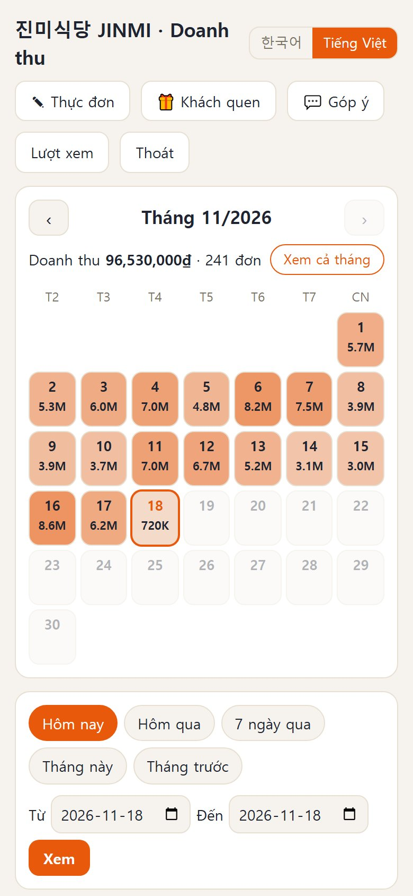
Màn hình sau khi bấm 📊 Doanh thu

Kết quả sau khi bấm 'Tháng trước'
📅 Lịch
Mỗi ô ghi doanh thu ngày đó (ví dụ: 8.2M = 8,2 triệu đồng) và số đơn. Màu càng đậm thì ngày đó bán càng nhiều. Bấm vào ngày để xem riêng ngày đó. Bấm ‹ › để đổi tháng.
⏱ Nút bấm nhanh
Hôm nay · Hôm qua · 7 ngày qua · Tháng này · Tháng trước. Cũng có thể tự chọn ngày bắt đầu và kết thúc (tối đa 93 ngày). Kết quả có Doanh thu · Đơn · TB mỗi đơn.
5-2Món bán chạy · giờ đông khách
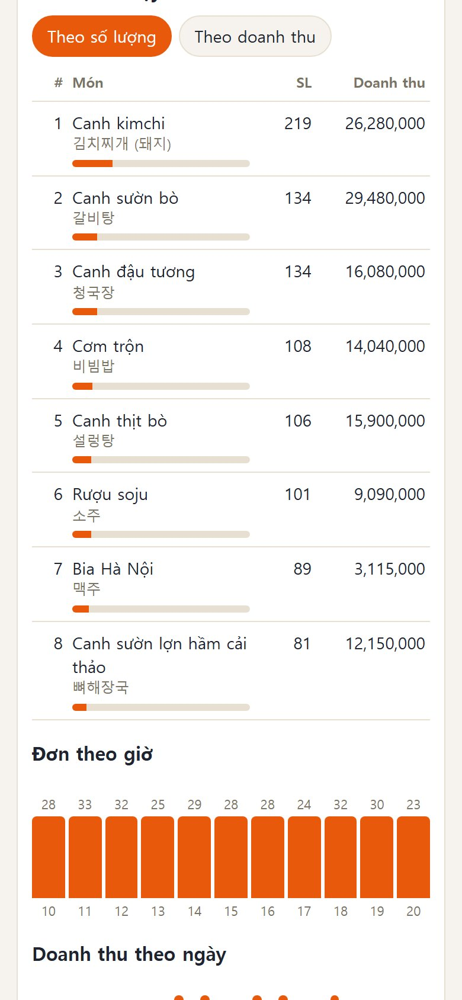
Sau khi kéo xuống
Món bán chạy — xem xếp hạng 'Theo số lượng' / 'Theo doanh thu'.
Đơn theo giờ — cột càng cao là giờ càng đông.
Doanh thu theo ngày — so sánh từng ngày trong khoảng thời gian đã chọn.
Tải CSV — mở bằng Excel để dán vào sổ sách.
⚠️ Cách tínhChỉ tính đơn khách gửi bằng 'Gửi đơn vào bếp'. Đơn nhân viên ghi tay, 'Đưa nhân viên xem' và đơn qua Zalo không được tính. Đơn đã hủy bị loại. Tích lũy từ ngày bật gọi món vào bếp.
💡 Cách dùng số liệu① Món hạng 1–3: gắn nhãn BEST và dùng hình đẹp ② Món gần như không bán được: đổi hình hoặc bỏ khỏi thực đơn ③ Giờ vắng khách: treo 'Dải ưu đãi hôm nay' (3-6)
5-3Báo cáo lượt xem
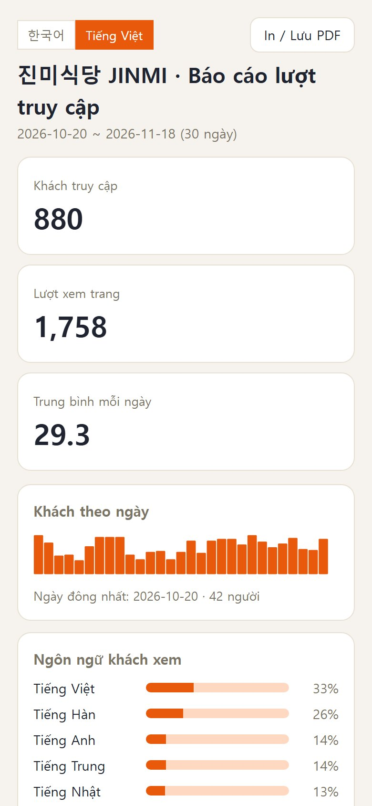
Bấm 'Lượt xem' thì mở trong cửa sổ mới
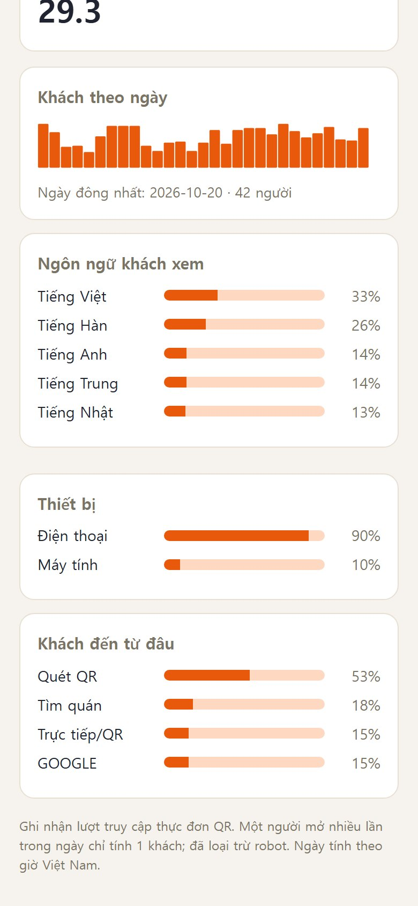
Sau khi kéo xuống
| Mục | Ý nghĩa |
|---|
| Khách truy cập | Số người đã mở thực đơn (một người chỉ tính 1 lần mỗi ngày) |
| Lượt xem trang | Số lần thực đơn được mở |
| Ngôn ngữ khách xem | Biết được khách nước nào đông |
| Khách đến từ đâu | Quét QR · Tìm quán · Trực tiếp · Google… |
💡 Mẹo hayDùng 'In / Lưu PDF' để lưu báo cáo cả tháng. Nếu khách nước ngoài đông thì nên quảng bá bằng ngôn ngữ đó (chương 9).
06
Giữ chân khách quen
Để khách cũ quay lại dễ hơn là tìm khách mới.
Chúng tôi giới thiệu hai công cụ: tem và hộp góp ý.
Trong chương này
- Bật tích tem cho khách quen
- Tặng tem bằng mã QR tích tem ở quầy
- Dùng ưu đãi · khách đổi điện thoại
- Bật hộp góp ý bí mật
- Đọc ý kiến khách và xử lý · đánh giá Google
6-1Bật tích tem cho khách quen
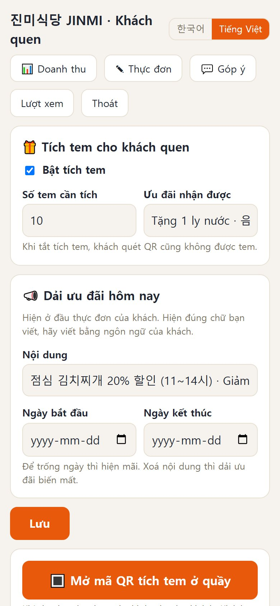
Màn hình chủ quán → 🎁 Khách quen
Thay cho phiếu giấy, tem tích ngay trong điện thoại của khách. Chúng tôi không lấy số điện thoại của khách.
- Ở màn hình chủ quán, bấm 🎁 Khách quen.
- Tích vào 'Bật tích tem'.
- Nhập số vào ô 'Số tem cần tích' (3–20 tem). VD: 10
- Ghi 'Ưu đãi nhận được'. VD: Tặng 1 ly nước · 음료 1잔 무료
- Bấm 'Lưu'.
⚠️ Lỗi hay gặp nhấtỞ bước 2, quên tích 'Bật tích tem' rồi lưu. Khi đó tính năng vẫn bị tắt. Sau khi lưu, hãy kiểm tra thực đơn của khách có dòng '🎁 Tem' không.
6-2Tặng tem cho khách
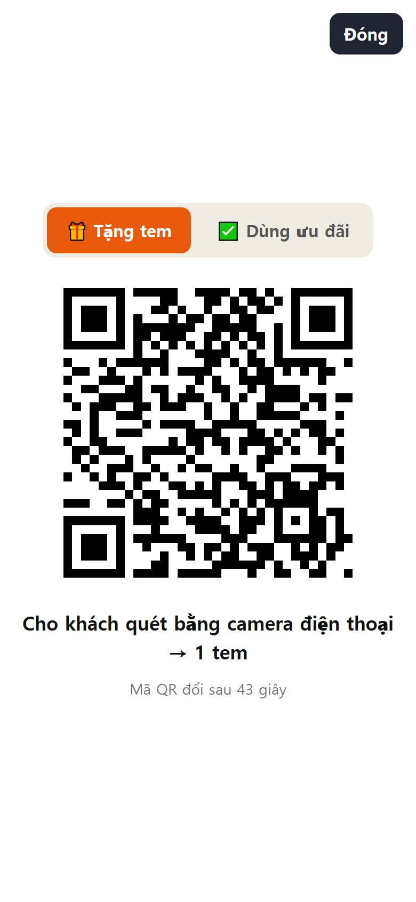
'Mở mã QR tích tem ở quầy'
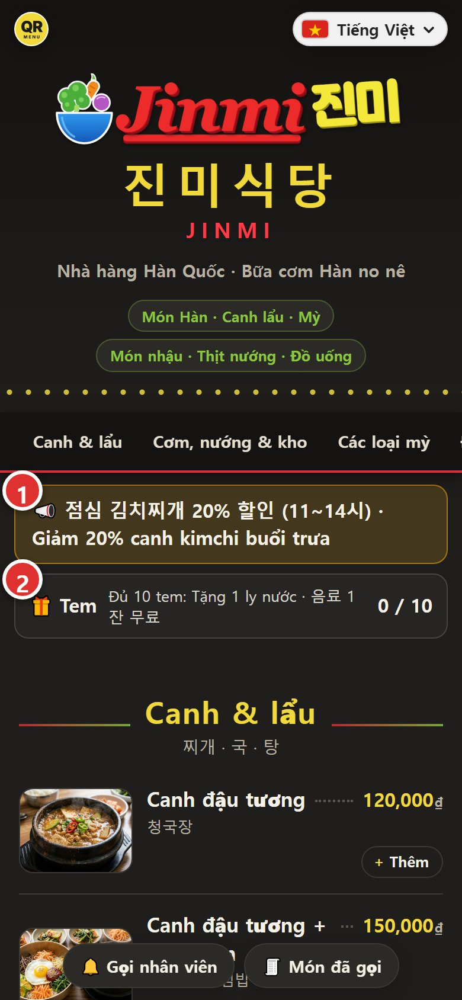
Dòng mới hiện trên thực đơn của khách
- Khi khách thanh toán, trên điện thoại ở quầy bấm 'Mở mã QR tích tem ở quầy'.
- Cho khách xem mã QR ở tab 🎁 Tặng tem.
- Khách quét bằng camera điện thoại là được 1 tem!
① 📣 Dải ưu đãi và ② 🎁 dòng tem hiện trên thực đơn của khách.
📌 Anh/chị nên biếtMã QR đổi mỗi 1 phút. Chụp ảnh gửi người khác cũng vô ích. Mỗi khách chỉ nhận được 1 lần mỗi ngày.
"Khi thanh toán, anh/chị quét mã QR này là được tích tem. Đủ 10 tem được tặng 1 ly nước ạ."
6-3Dùng ưu đãi · khách đổi điện thoại

Màn hình của khách vừa nhận tem
Màn hình khách hiện “Bạn nhận được 1 tem” cùng thẻ tem.
🎉 Khách đã đủ tem
- Ở màn hình QR quầy, bấm tab ✅ Dùng ưu đãi.
- Khách quét QR đó thì tem được trừ và ưu đãi được dùng.
- Tặng ưu đãi đã hứa (nước uống…).
📱 Khách đổi điện thoại
Dưới thẻ tem có mã khôi phục (VD: abcd-efgh). Trên điện thoại mới, nhập vào 'Khôi phục bằng mã' là tem quay lại.
💡 Mẹo haySố tem đừng quá nhiều (5–10 tem). Khách mới phải thấy “chẳng mấy chốc là đủ” thì mới quay lại.
6-4Bật hộp góp ý bí mật
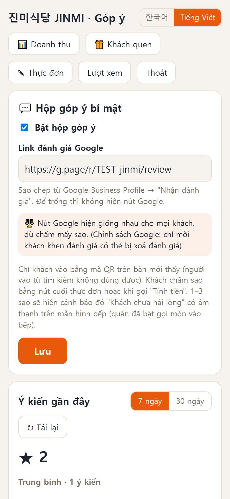
Màn hình chủ quán → 💬 Góp ý
Khách để lại số sao (1–5) và vài lời chỉ cho chủ quán. Khách khác không thấy.
- Ở màn hình chủ quán, bấm 💬 Góp ý.
- Tích vào 'Bật hộp góp ý'.
- Nhập Link đánh giá Google. (Nếu chưa biết, chúng tôi sẽ tìm giúp)
- Bấm 'Lưu'.
📌 Ai dùng được?Chỉ khách vào bằng thẻ QR trên bàn mới dùng được. Vì vậy quán đối thủ hay người phá đám không thể gửi lời chê giả.
6-5Hộp góp ý khách nhìn thấy
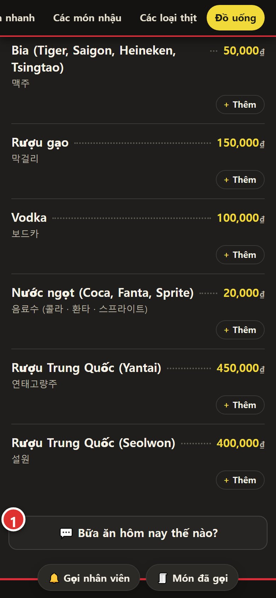
① Nút dưới thực đơn
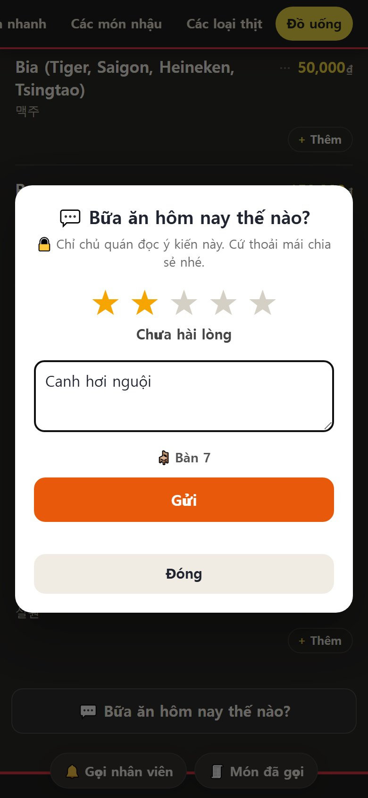
② Số sao và lời nhắn
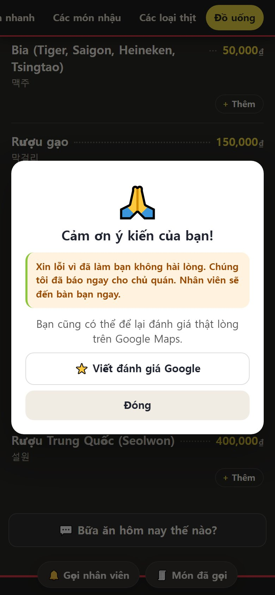
③ Sau khi gửi (2 sao)
- Cuối thực đơn luôn có nút '💬 Bữa ăn hôm nay thế nào?'. Khi khách gọi 'Tính tiền', nó cũng tự hiện một lần.
- Chọn sao, viết vài lời rồi bấm 'Gửi'.
- 1–3 sao thì khách thấy lời xin lỗi và màn hình bếp hiện cảnh báo đỏ “KHÁCH CHƯA HÀI LÒNG” (4-4). Tất cả khách đều thấy nút 'Viết đánh giá Google' giống nhau.
6-6Đọc ý kiến · giữ đánh giá Google
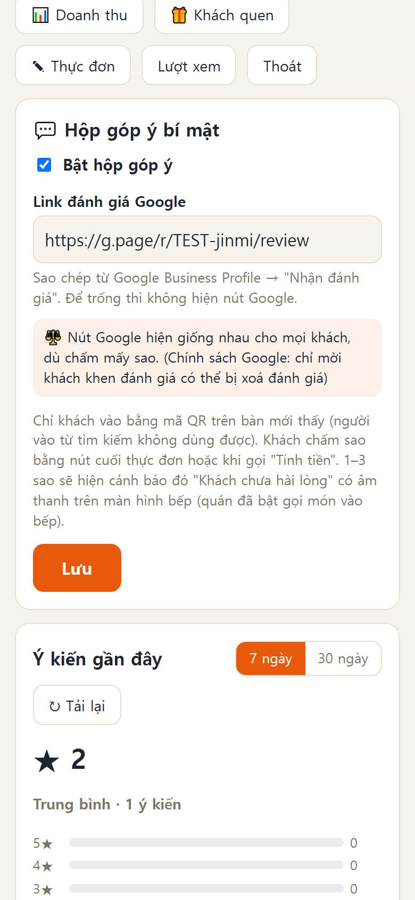
Ý kiến gần đây
Chọn 7 ngày / 30 ngày để xem số sao trung bình và số lượng theo từng mức sao. Ý kiến 1–3 sao có dòng màu đỏ.
😟 Khi có số sao thấp
- Ra bàn ngay và hỏi “Anh/chị có điều gì chưa hài lòng không ạ?”.
- Đừng biện hộ, hãy xin lỗi → việc gì sửa được ngay thì sửa ngay.
- Nếu cùng một lời phàn nàn lặp lại nhiều lần thì đưa ra họp nhân viên.
⚠️ Quy định của Google — nhất định phải tuân thủ① Không được chỉ nhờ khách chấm sao cao đánh giá. ② Không được tặng giảm giá, đồ uống, tem để đổi lấy đánh giá. ③ Không được viết đánh giá giả. Vi phạm thì Google có thể xóa đánh giá hoặc khóa thông tin quán. Vì vậy hộp góp ý hiện nút đánh giá giống nhau cho mọi khách.
07
Mẹo vận hành quán
Công cụ chỉ phát huy khi dùng thành thói quen hằng ngày.
Từ cách đặt thẻ QR đến bảng kiểm tra hằng ngày, chúng tôi đã tóm tắt lại.
Trong chương này
- Thẻ QR đặt ở đâu, đặt thế nào?
- Huấn luyện nhân viên 10 phút
- Bảng kiểm tra hằng ngày (trước giờ mở cửa · trong giờ bán · đóng cửa)
- Kiểm tra hằng tuần · hằng tháng
7-1Cách đặt thẻ QR
Thẻ QR đặt trên bàn (A6)
👍 Nên đặt thế này
- Chỗ khách vừa ngồi xuống là thấy — giữa bàn, cạnh ống đũa, hộp khăn giấy
- Dựng đứng trên chân đế hoặc giá acrylic
- Ép plastic để phần QR không bị gập, không bị ướt
- Mỗi tuần kiểm tra số bàn và số trên thẻ có giống nhau không
👎 Thế này sẽ không quét được
· Chỗ có đèn chiếu phản chiếu · Thẻ dính dầu mỡ · Chỗ quá thấp hoặc khuất · Dán tem hoặc bảng giá lên QR
💡 Đặt thêm một thẻ ở cửa vàoĐặt một mã QR lớn ở trước cửa hoặc quầy tính tiền, khách đang chờ có thể chọn món trước. (Hãy nhờ làm loại QR không có số bàn)
7-2Huấn luyện nhân viên 10 phút
Khi có nhân viên mới, hãy cùng làm theo bảng này trong 10 phút. Mở sẵn chương 2, 4, 8 của sách thì sẽ dễ hơn.
| STT | Làm gì | Làm thế nào |
|---|
| 1 | Làm quen màn hình khách (2 phút) | Dùng điện thoại nhân viên quét QR, thêm món → đơn gọi món → bấm thử đến 'Đưa nhân viên xem'. |
| 2 | Đọc đơn gọi món (1 phút) | Đọc chữ tiếng Việt to · số bàn · ghi chú trên màn hình 'Đưa nhân viên xem'. |
| 3 | Màn hình bếp (3 phút) | Gửi 1 đơn thử rồi bấm [Nhận đơn] → [Xong]. Bấm thử cả [Xong] ở dải khách gọi. |
| 4 | Sơ đồ bàn (1 phút) | Khi khách ra về, bấm [Dọn bàn]. |
| 5 | Lời nói với khách (2 phút) | Đọc thành tiếng các câu mẫu ở chương 8 hai ba lần. |
| 6 | Tem · hộp góp ý (1 phút) | Cho khách xem mã QR tích tem ở quầy khi thanh toán, có cảnh báo đỏ thì ra bàn ngay. |
⚠️ Việc không nói cho nhân viênHãy để nhân viên không thấy mật khẩu màn hình chủ quán và doanh thu. Màn hình bếp không hiện doanh thu.
💡 Đổi chữ màn hình chủ quán sang tiếng ViệtBấm 'Tiếng Việt' ở góc trên bên phải màn hình chủ quán thì quản lý người Việt cũng sửa được thực đơn.
7-3Bảng kiểm tra hằng ngày
Hãy in trang này ra và dán ở bếp hoặc quầy.
🌅 Trước giờ mở cửa
- Bật máy tính bảng ở bếp · cắm sạc
- Bấm '▶ Bắt đầu' trên màn hình bếp
- ⚙ → Thử âm thanh
- Giấy máy in · In thử
- Nguyên liệu hôm nay không có → tích hết món · lưu
- Thẻ QR đúng chỗ · sạch
🍽 Trong giờ bán
- Có đơn mới thì bấm [Nhận đơn] ngay
- Món ra thì bấm [Xong]
- Dải khách gọi thì bấm [Xong] ngay
- Cảnh báo đỏ → ra bàn ngay
- Hết nguyên liệu thì báo hết món ngay
- Khách ra về thì [Dọn bàn]
🌙 Đóng cửa
- Xử lý đơn chưa xong (Xong · Hủy)
- Bỏ tích hết món · lưu
- 📊 Xem doanh thu hôm nay
- 💬 Đọc ý kiến hộp góp ý
- Sạc máy tính bảng
7-4Kiểm tra hằng tuần · hằng tháng
| Khi nào | Việc cần làm |
|---|
| Mỗi thứ Hai | 📊 7 ngày qua — gắn BEST cho món hạng 1–3 · 💬 xem số sao trung bình 7 ngày · kiểm tra số thẻ QR |
| Mùng 1 hằng tháng | 📊 Doanh thu tháng trước · lưu báo cáo lượt xem · đổi hình hoặc bỏ món bán không chạy · sửa giá đã thay đổi · lên kế hoạch dải ưu đãi tháng này |
| Khi có món mới | Chụp hình (3-4) → '+ Thêm món' → gắn nhãn Món mới → báo bằng dải ưu đãi → đăng mạng xã hội (chương 9) |
08
Lời nói với khách
Khách lần đầu có thể còn lạ với mã QR.
Chỉ cần một câu ngắn gọn, thân thiện là đủ. Cứ đọc đúng như vậy.
Trong chương này
- Khi dẫn khách vào bàn · khách khó dùng điện thoại
- Khách nước ngoài · xác nhận món · hết món
- Khi món ra chậm · khi tính tiền · tem
- Khi khách phàn nàn · khi tiễn khách
📌 Cách xemDòng trên là tiếng Việt (cho khách và nhân viên người Việt), dòng giữa là tiếng Hàn, dòng dưới là tiếng Anh (cho các khách nước ngoài khác).
8-1Dẫn vào bàn · khi gọi món
🪑 Khi khách vừa ngồi xuống
"Anh/chị quét mã QR trên bàn bằng camera điện thoại là xem được thực đơn có hình. Anh/chị gọi món ngay trên đó được ạ."
"테이블의 QR을 휴대폰 카메라로 찍으시면 사진 메뉴판이 나와요. 거기서 바로 주문하실 수 있어요."
"Scan the QR code on the table with your phone camera to see our photo menu. You can order right there."
👵 Khách khó dùng điện thoại
"Để em giúp anh/chị ạ. Anh/chị mở camera, hướng vào ô vuông này… Dạ, giờ bấm vào đường link màu vàng là được ạ."
"제가 도와드릴게요. 카메라를 켜서 여기 네모에 대 보세요. … 네, 이 노란 주소를 누르시면 돼요."
"Let me help you. Open the camera and point it at this square… Yes, now tap the link."
🌏 Khách nước ngoài
"Anh/chị bấm nút ở góc trên bên phải là đổi được sang tiếng Anh, tiếng Trung, tiếng Nhật ạ."
"오른쪽 위 버튼을 누르시면 영어·중국어·일본어로도 보실 수 있어요."
"Tap the button at the top right to change the language."
🧾 Khi khách đã chọn xong món
"Anh/chị bấm 'Xem đơn' ở phía dưới rồi bấm 'Gửi đơn vào bếp' nhé. Bếp nhận được ngay ạ."
"아래 '주문서 보기'를 누르고 '주방으로 주문 보내기'를 눌러 주세요. 바로 주방에 들어가요."
"Tap 'View order' at the bottom, then 'Send order to kitchen'. The kitchen gets it right away."
8-2Hết món · món ra chậm · gọi nhân viên
🚫 Khi hết món
"Xin lỗi anh/chị, hôm nay món đó hết rồi ạ. Anh/chị thử món ○○ nhé? Món này khách gọi nhiều lắm ạ."
"죄송해요, 오늘은 그 메뉴 재료가 다 떨어졌어요. 대신 ○○ 어떠세요? 손님들이 많이 찾으세요."
"Sorry, that dish is sold out today. How about ○○? It's very popular."
⏳ Khi khách hỏi bao giờ món ra
"Bếp đang làm rồi ạ. Anh/chị bấm 'Món đã gọi' là xem được món đang làm tới đâu ạ."
"지금 만들고 있어요. '주문 내역'을 누르시면 어디까지 됐는지 보실 수 있어요."
"It's being cooked now. Tap 'Our orders' to see the status."
🔔 Khi cần nước, đồ ăn kèm
"Anh/chị cần gì cứ bấm 'Gọi nhân viên' nhé. Nước, thêm đồ ăn kèm, tính tiền đều có nút bấm ạ."
"필요하신 게 있으면 '직원 호출'을 누르세요. 물, 반찬, 계산서 모두 버튼으로 부르실 수 있어요."
"If you need anything, tap 'Call staff' — water, side dishes or the bill."
✅ Khi xác nhận món (Đưa nhân viên xem)
"Anh/chị cho em xem màn hình điện thoại một chút được không ạ? 2 phần canh kimchi, 1 phần canh thịt bò, đúng không ạ?"
"휴대폰 화면 한번 보여 주시겠어요? 김치찌개 2개, 설렁탕 1개 맞으시죠?"
"May I see your screen? Two kimchi stews and one beef soup, right?"
8-3Tính tiền · tem · phàn nàn · tiễn khách
🎁 Khi tính tiền (tem)
"Anh/chị quét mã này để tích tem nhé. Đủ 10 tem được tặng 1 ly nước. Không cần số điện thoại ạ."
"이 QR을 찍으시면 도장이 쌓여요. 10개 모으시면 음료 한 잔 드려요. 전화번호는 필요 없어요."
"Scan this to collect a stamp. Ten stamps get you a free drink. No phone number needed."
💬 Khi nhờ khách góp ý
"Anh/chị để lại vài lời ở nút cuối thực đơn giúp quán nhé. Chỉ chủ quán đọc thôi ạ."
"오늘 식사 어떠셨는지 메뉴판 아래 버튼으로 한마디 남겨 주시면 큰 도움이 돼요. 사장님만 봐요."
"We'd love your feedback — use the button at the bottom of the menu. Only the owner reads it."
😟 Khi khách phàn nàn
"Quán thành thật xin lỗi anh/chị. Anh/chị cho em biết chưa hài lòng chỗ nào, quán sẽ sửa ngay ạ."
"불편을 드려 정말 죄송합니다. 무엇이 불편하셨는지 말씀해 주시면 바로 고칠게요."
"We're very sorry. Please tell us what went wrong and we'll fix it right away."
👋 Khi tiễn khách
"Cảm ơn anh/chị ạ! Anh/chị lưu lại đường link thực đơn, lần sau có thể chọn món trước khi đến."
"감사합니다! 메뉴판 주소를 저장해 두시면 다음엔 오시기 전에 미리 고르실 수 있어요."
"Thank you! Save our menu link and choose your dishes before your next visit."
⚠️ Không được nói câu này"Anh/chị viết đánh giá tốt thì quán giảm giá ạ" ✕ — vi phạm quy định của Google (6-6).
09
Mẹo quảng bá quán
Chỉ với một địa chỉ thực đơn là quảng bá được trong quán, ngoài quán và cả trên mạng.
Chúng tôi chỉ gom những cách không tốn tiền.
Trong chương này
- Cách dùng hình mạng xã hội
- Gắn thực đơn vào Google Maps
- Cách dùng Zalo · Facebook
- Lịch ý tưởng cho dải ưu đãi
- Những kiểu quảng bá không được làm
9-1Cách dùng hình mạng xã hội
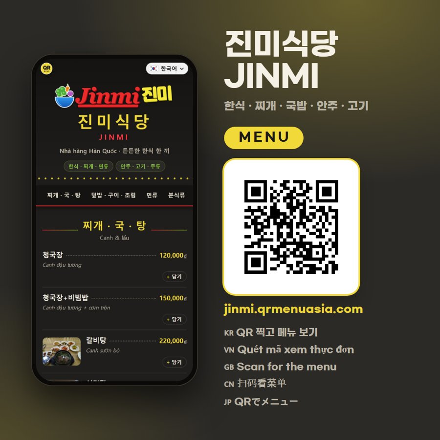
Hình vuông — bài đăng Facebook · Instagram · Zalo

Hình dọc — Story · Nhật ký
Khi ký hợp đồng, chúng tôi đã gửi hai hình này. Quét mã QR trong hình là mở được thực đơn.
📢 Nội dung kèm theo khi đăng (ví dụ)
Thực đơn Jinmi đã có trên điện thoại! Xem hình, chọn món và gọi ngay tại bàn. 👉 jinmi.qrmenuasia.com
진미식당 메뉴판이 휴대폰으로 들어왔어요! 사진 보고 고르고, 자리에서 바로 주문하세요. 👉 jinmi.qrmenuasia.com
💡 Mẹo hayNgoài hình, nhớ ghi cả địa chỉ thực đơn vào nội dung bài đăng. Người xem bằng điện thoại không quét QR được nên phải bấm vào địa chỉ.
9-2Gắn thực đơn vào Google Maps
Khách chọn quán thường xem Google Maps. Anh/chị có thể làm đẹp thông tin Google của quán miễn phí.
- Trên điện thoại, đăng ký làm chủ quán trong Hồ sơ doanh nghiệp trên Google (Google Business Profile). Tìm quán trên Google Maps theo tên rồi bấm 'Bạn là chủ sở hữu doanh nghiệp này?'.
- Nhập địa chỉ thực đơn vào ô 'Liên kết thực đơn' hoặc 'Trang web'.
- Thêm giờ mở cửa · số điện thoại · hình món ăn. Hình càng nhiều thì càng được hiện nhiều.
- Với đánh giá của khách, dù tốt hay xấu cũng trả lời ngắn gọn.
📌 Nếu anh/chị khó tự làmHãy báo chúng tôi. Chúng tôi sẽ hướng dẫn bấm gì theo từng màn hình. (Mật khẩu thì chính anh/chị phải tự nhập)
💡 Ví dụ trả lời đánh giáĐánh giá tốt: "Cảm ơn anh/chị đã ăn ngon miệng! Lần sau nhớ thử thêm món canh sườn bò (galbitang) nhé."
Đánh giá xấu: "Quán xin lỗi vì đã làm anh/chị không hài lòng. Điều anh/chị nói quán đã sửa ngay. Mong anh/chị cho quán thêm một cơ hội."
📌 Trang tìm quánQuán mình cũng được giới thiệu trên trang qrmenuasia.com/stores của chúng tôi. Khách tìm theo khu vực, loại món rồi vào xem.
9-3Zalo · Facebook
💬
Zalo
· Ghi địa chỉ thực đơn vào phần giới thiệu trong hồ sơ Zalo của quán
· Đăng món mới, tin giảm giá vào nhóm Zalo của khách quen
· Khi có khách hỏi đặt bàn, gửi địa chỉ thực đơn trước
· Đăng hình mạng xã hội dạng dọc lên Nhật ký
📘
Facebook
· Ghi địa chỉ thực đơn vào phần 'Giới thiệu' của trang quán
· Mỗi tuần đăng 1–2 lần hình món ăn kèm địa chỉ
· Giới thiệu trong nhóm địa phương, nhóm người Hàn (tuân thủ quy định nhóm)
· Trả lời bình luận, tin nhắn trong vòng một ngày
📸 Bài đăng khách thích
| Loại | Ví dụ |
|---|
| Hình món ăn còn bốc khói | "Nước canh sườn bò hôm nay hầm 12 tiếng đó ạ" |
| Món mới | "Món mới tuần này — xem hình và gọi ngay trên thực đơn nhé" |
| Tin giảm giá | "Ngày mưa giảm 10% bánh xèo hải sản (xem dải ưu đãi trên thực đơn)" |
| Chuyện người trong quán | "Vị kimchi bếp trưởng giữ suốt 30 năm" |
9-4Lịch ý tưởng cho dải ưu đãi
'Dải ưu đãi hôm nay' (3-6) mọi khách mở thực đơn đều thấy. Anh/chị thử viết như sau.
| Khi nào | Ví dụ nội dung dải ưu đãi |
|---|
| Giờ vắng khách | 2–5h chiều mua 1 tặng 1 đồ uống · 오후 2~5시 음료 1+1 |
| Buổi trưa | Giảm 10% set trưa (11–14h) · 점심 세트 10% 할인 (11~14시) |
| Ngày mưa | Trời mưa giảm 10% bánh xèo hải sản · 비 오는 날 해물파전 10% 할인 |
| Món mới | Món mới ○○ giảm 15% tuần đầu · 신메뉴 ○○ 첫 주 15% 할인 |
| Lễ, Tết, ngày kỷ niệm | Tết vẫn mở cửa (○–○) · 설 연휴 영업합니다 (○일~○일) |
| Nhắc khách quen | Tích đủ 10 tem tặng 1 ly nước! Quét QR khi thanh toán · 도장 10개 = 음료 1잔! |
💡 Mẹo hayNhớ ghi ngày bắt đầu và ngày kết thúc. Ưu đãi đã hết mà vẫn hiện thì dễ cãi nhau với khách.
9-5Những kiểu quảng bá không được làm
- Tặng giảm giá, quà để đổi lấy đánh giá ✕ (vi phạm quy định Google)
- Chỉ nhờ khách chấm sao cao đánh giá ✕
- Người nhà, nhân viên viết đánh giá giả ✕
- Dùng hình, bài viết của quán khác khi chưa được phép ✕
- Để giá trên thực đơn khác với giá tính tiền thực tế ✕ — giá thay đổi thì sửa ngay (3-3).
10
Câu hỏi thường gặp ·
Khi gặp sự cố
Phần lớn chỉ mất 1 phút là xong.
Nếu vẫn không được, hãy báo qua liên hệ ở trang cuối.
Trong chương này
- Sự cố màn hình khách
- Sự cố màn hình chủ quán
- Sự cố màn hình bếp · máy in
- Sự cố tem · hộp góp ý · doanh thu
- Liên hệ
10-1Màn hình khách · màn hình chủ quán
Hỏi: Điện thoại khách không mở được QR.Mở camera, hướng vào mã QR 1–2 giây. Khi đường link hiện bên dưới thì bấm vào. Nếu không được, dùng chức năng quét QR của Zalo hoặc Google Lens. Thẻ bị ướt hoặc phản chiếu thì khó quét.
Hỏi: Màn hình khách hiện "Vui lòng quét lại mã QR trên bàn".Do thẻ QR trên bàn đã bị thay, hoặc khách quét nhầm thẻ của bàn khác. Hãy cho khách quét lại thẻ của đúng bàn đó.
Hỏi: Không thấy nút 'Gửi đơn vào bếp' hay 'Gọi nhân viên'.Các nút này chỉ hiện ở quán đã bật gọi món vào bếp, và chỉ với khách vào bằng thẻ QR trên bàn. Khách vào từ trang tìm quán hay Google chỉ thấy 'Đưa nhân viên xem'.
Hỏi: Tôi đã sửa giá mà màn hình khách vẫn như cũ.① Anh/chị đã bấm 'Lưu và hiển thị cho khách' chưa? ② Chờ khoảng 1 phút rồi kéo màn hình khách xuống để tải lại.
Hỏi: Tôi quên mật khẩu màn hình chủ quán.Hãy liên hệ chúng tôi. Chúng tôi sẽ tạo mật khẩu mới. (Chúng tôi cũng không xem được mật khẩu cũ)
Hỏi: Hiện "Phiên đăng nhập đã hết" / không vào được.Đóng cửa sổ hoặc quá 12 giờ thì phải nhập lại mật khẩu. Nhập sai 8 lần sẽ bị khóa 1 giờ. Hãy thử lại sau 1 giờ.
Hỏi: Tôi sửa nhầm làm thực đơn bị lạ.Trong 'Phiên bản cũ', chọn ngày trước lúc sửa rồi bấm 'Dùng phiên bản này' (3-5).
10-2Bếp · máy in · tem · doanh thu
Hỏi: Màn hình bếp không có tiếng.① Anh/chị đã bấm '▶ Bắt đầu' chưa? ② Tăng âm lượng máy tính bảng hết cỡ, tắt chế độ im lặng ③ ⚙ → Độ lớn âm thanh 'Rất to' → Thử âm thanh.
Hỏi: Chấm tròn ở góc trên bên trái màn hình bếp màu xám/đỏ.Là mất mạng. Hãy kiểm tra Wi-Fi. Khi kết nối lại, chấm tự chuyển xanh lá và các đơn sẽ vào lại.
Hỏi: Hóa đơn không in ra.① Nguồn và giấy của máy in ② Chiều giấy (mặt giấy nhiệt hướng ra ngoài) ③ Trong app RawBT đã chọn máy in chưa ④ ⚙ → In thử. Nếu 'Tự in đơn mới' không chạy thì bấm [🖨 In].
Hỏi: Khách nói không nhận được tem.Mỗi khách chỉ nhận 1 lần mỗi ngày. Ngoài ra QR đổi mỗi 1 phút nên phải quét ngay mã trên màn hình. Mã QR chụp ảnh sẵn thì không được.
Hỏi: Khách đổi điện thoại nên mất tem.Nhập mã khôi phục trên thẻ tem của điện thoại cũ vào điện thoại mới là tem quay lại. Nếu không có mã khôi phục thì không lấy lại được.
Hỏi: Doanh thu ít hơn thực tế.Chỉ tính đơn gửi bằng 'Gửi đơn vào bếp'. Đơn nhân viên ghi tay và đơn đã hủy không được tính (5-2).
Hỏi: Tôi muốn đổi nhiều món / cần thêm thẻ QR.Hãy gửi cho chúng tôi hình ảnh và danh sách. Chúng tôi sẽ đổi một lượt và làm lại thẻ cho anh/chị.
10-3Liên hệ · thông tin quán
Điền vào bảng dưới rồi để ở quầy. Nhân viên có thay đổi cũng dễ tìm.
| Địa chỉ thực đơn của quán | https://__________________.qrmenuasia.com |
|---|
| Địa chỉ màn hình chủ quán | qrmenuasia.com/owner/?shop=__________ |
|---|
| Địa chỉ màn hình bếp | qrmenuasia.com/kitchen/?shop=__________ |
|---|
| Nơi nhờ hỗ trợ (người phụ trách) | Tên: ______________ |
|---|
| Cách liên hệ | Zalo / Điện thoại: ______________ |
|---|
| Tên máy in · khổ giấy | ______________ / 58mm · 80mm |
|---|
⚠️ Đừng ghi mật khẩu và PIN vào đâyMất thì chúng tôi tạo lại cho. Ghi ra giấy thì người khác có thể thấy.
📞 Khi liên hệ, hãy gửi kèm
- Tên quán
- Một dòng: đang làm gì thì bị lỗi
- 1 ảnh chụp màn hình điện thoại
💡 Lời cuốiChỉ cần dùng mỗi ngày trong tuần đầu tiên. Quen tay rồi thì mỗi ngày 5 phút là đủ. Có gì thắc mắc cứ hỏi chúng tôi bất cứ lúc nào. Chúc quán buôn bán đắt khách! 🙌